Can force reach the nuclear interior?
The lecture opens with a question: can the cell transmit mechanical information into the nuclear interior? At the time, a prevailing view treated the nucleoplasm as a compartment that force could not cross. The experiments below test that by watching what moves inside living nuclei when the cell is placed under tension.
Mouse cell nuclei under tension
Montage of nuclei in mouse cells alongside a phase-contrast field. The question driving the experiments: do nuclear structures move when the cell is stretched?
Splicing factor compartments in a live nucleus
A GFP-labelled nucleus whose speckle-like compartments are followed over a timed sequence.
Tracking SFC movement
Tracks of individual splicing factor compartments (SFCs) in a nucleus under tension; coloured paths trace the motion of selected compartments.
Seeing the nucleus with energy-filtered TEM
Energy-filtered transmission electron microscopy (EFTEM) produces quantitative maps of the spatial distribution of DNA and protein in situ by imaging phosphorus and nitrogen separately. These maps give both a structural picture and a quantitative basis for modelling what moves where.

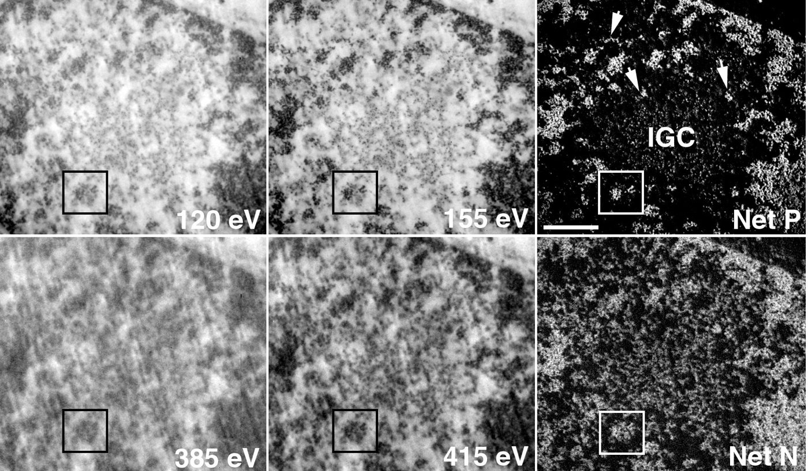

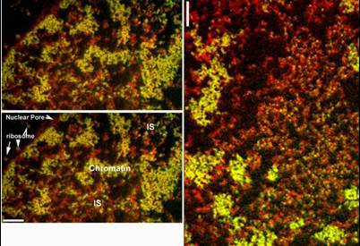

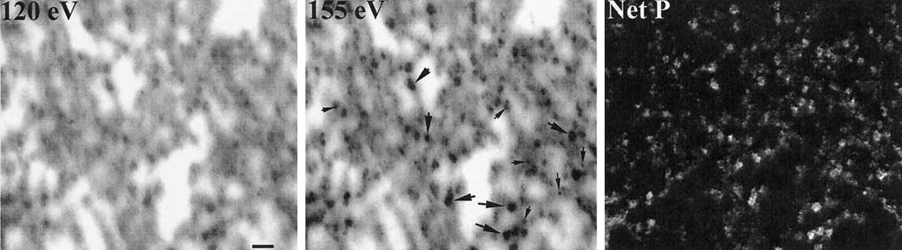
Series of EFTEM sections
A short series of EFTEM images of nuclear material, stepping through successive images.
Splicing factor compartments move as a unit
Splicing factor compartments (SFCs) are the nuclear speckles that concentrate pre-mRNA splicing factors. Tracking them in living cells shows how they behave over minutes and how they relate to the surrounding chromatin and other nuclear bodies.

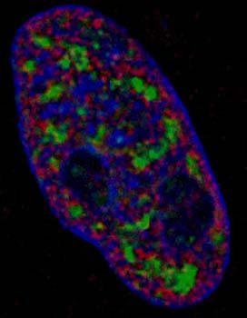

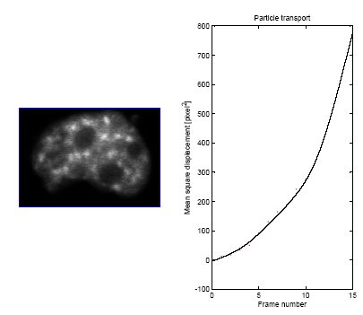
GFP-tagged HeLa nucleus
Three-dimensional time-lapse of a HeLa nucleus; box shows the imaged volume.
SC35 compartments in 3D
3D rendering of an Indian muntjac nucleus with chromatin and SC35-labelled compartments.
Particle tracking with 40 nm beads
Injected 40 nm fluorescent beads act as probes of the nuclear interior: how freely they move reports on the accessible space between chromatin structures. Computer simulations of diffusion through the measured phosphorus and nitrogen maps then test whether the observed structure explains that movement.

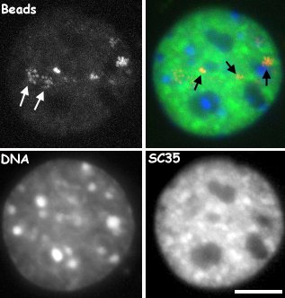

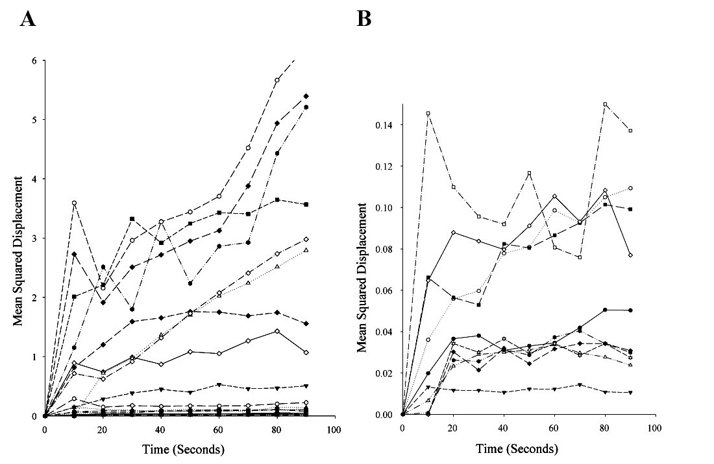
Beads, DNA and SC35 together
Four-panel time-lapse (beads, DNA, SC35 and merge) from the bead-tracking experiments.
Bead movement at high magnification
High-magnification view of beads within a nucleus, with an enlarged inset (right).

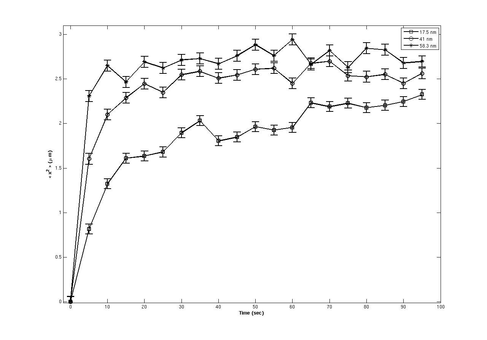

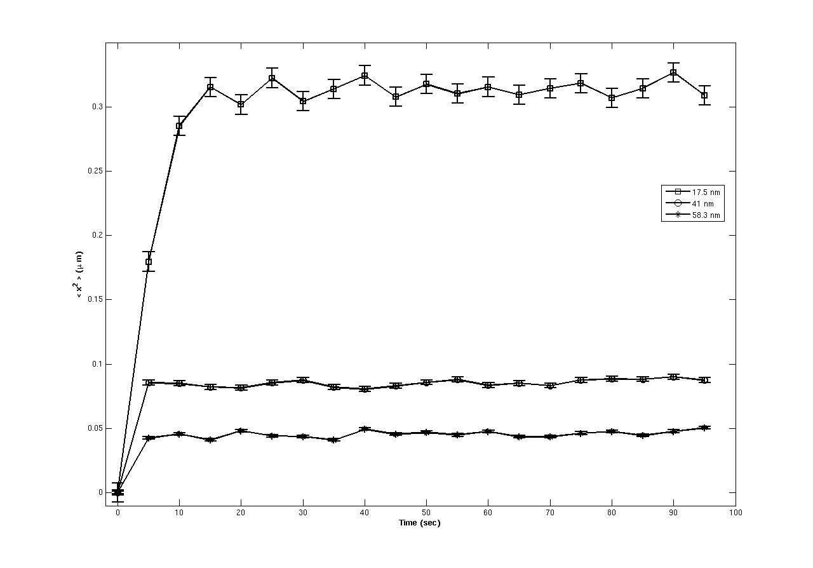
PML bodies are confined to small nuclear volumes
PML bodies are tracked in living cells and their trajectories plotted in XY over time. Their movement is restricted to small regions of the nucleus, consistent with confinement by the surrounding nuclear architecture.

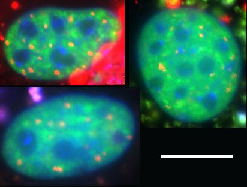
PML body movement
Time-lapse of PML bodies (red) within a nucleus; timestamps in minutes.
Two-colour nucleus, 36-minute series
Single-channel and merged views of one nucleus followed across a 36-minute time course.
DIC and fluorescence of the same cell
DIC view (left) and fluorescence of the nucleus (right) over a 24-minute series.
Nuclear actin dynamics by FRAP
Fluorescence recovery after photobleaching of GFP-actin compares wild-type and mutant actin and the effect of latrunculin, reporting on the mobility of nuclear and cytoplasmic pools.

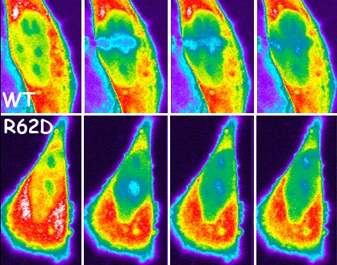

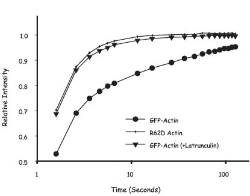

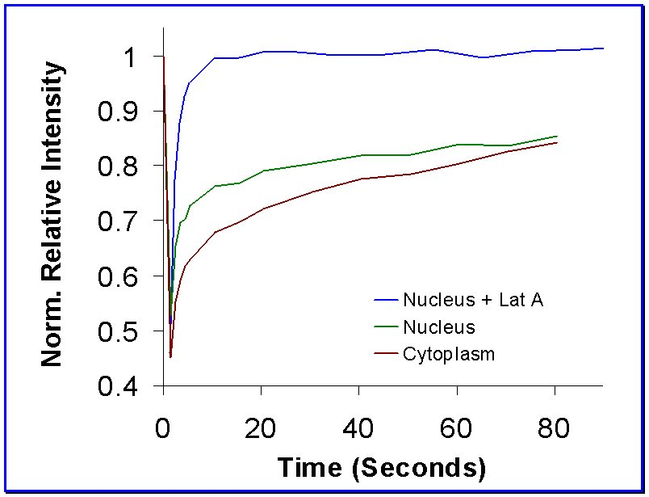
Organization of the genome at the nanoscale
Returning to EFTEM, the final part looks at how DNA is packed in situ. Quantitative phosphorus and nitrogen maps reveal chromatin fibre-scale organization, the interchromatin space, and how nuclear bodies sit within it. Together they argue that most chromatin is organized into higher-order structures in vivo.

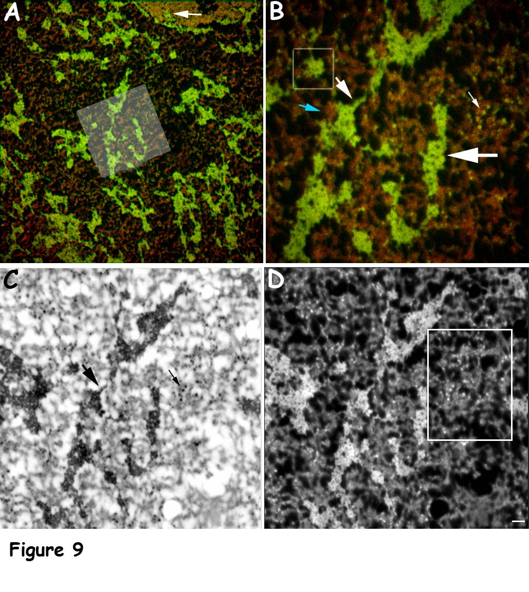

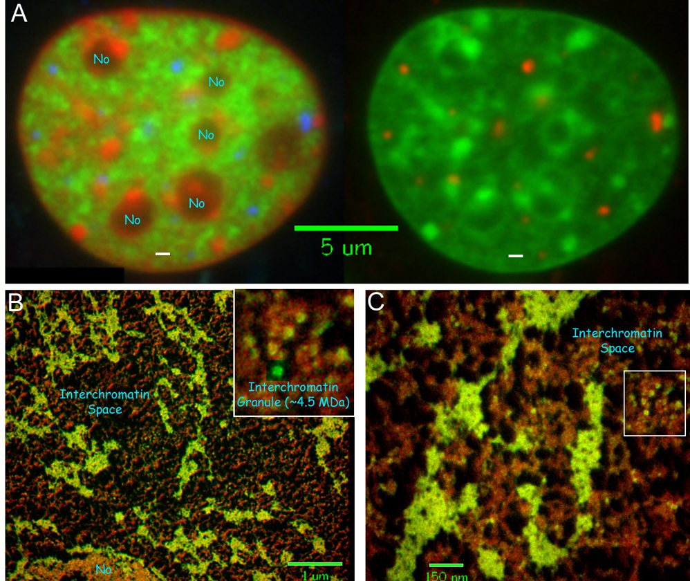

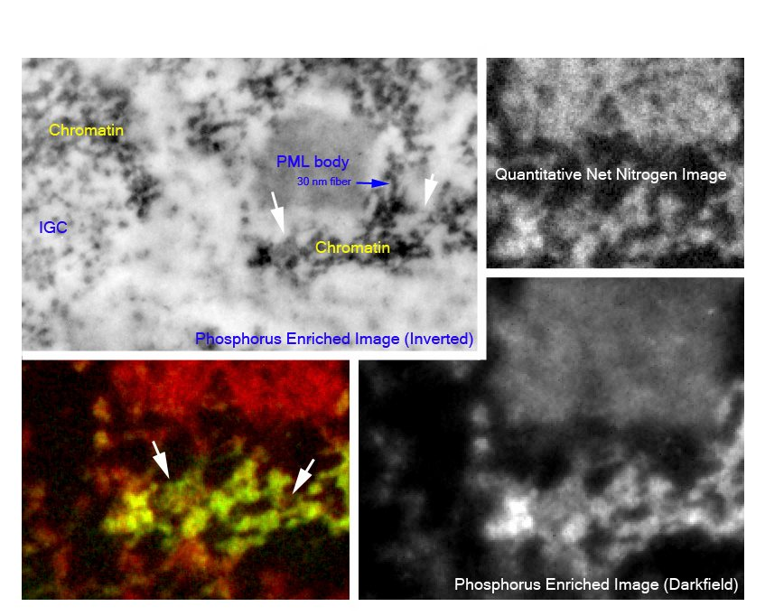

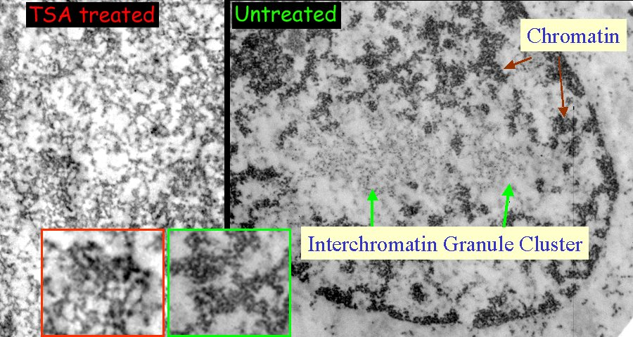

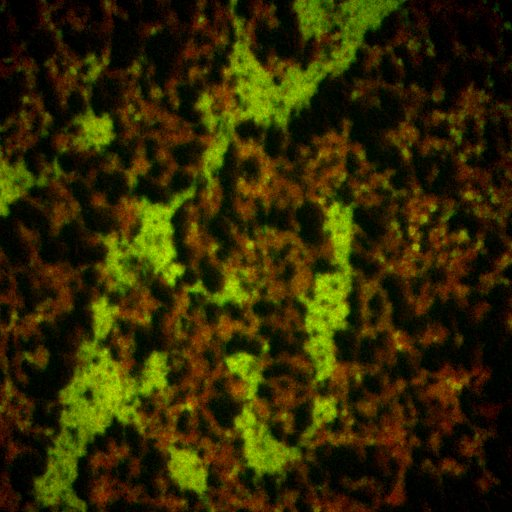

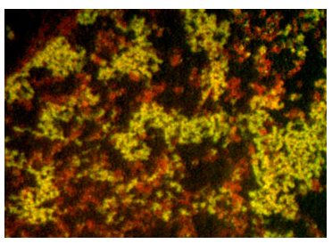

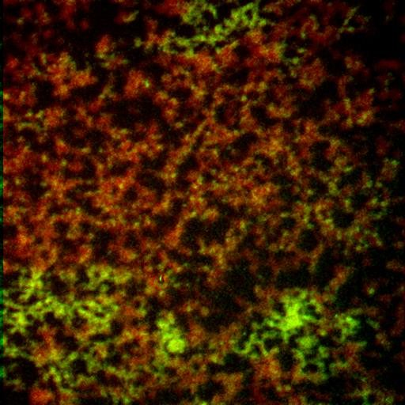

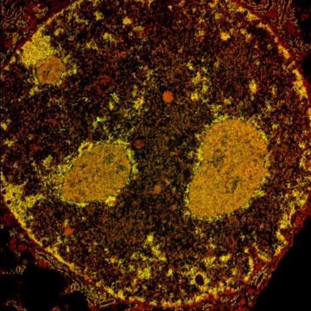

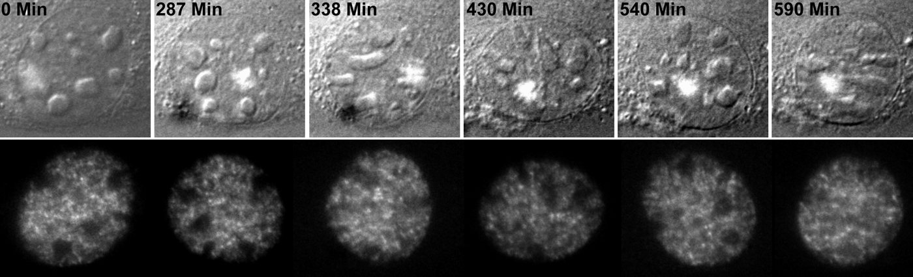
Acknowledgements
Hendzel lab members Darin McDonald, Christi Andrin, Kirk McManus, Ellen Crawford, Carmen Tomkinson, Ming Ye, Rohyun Sung and Jianxun Han, with John Th’ng (Northwestern Ontario Regional Cancer Centre) and Joan Turner (Cross Cancer Institute).